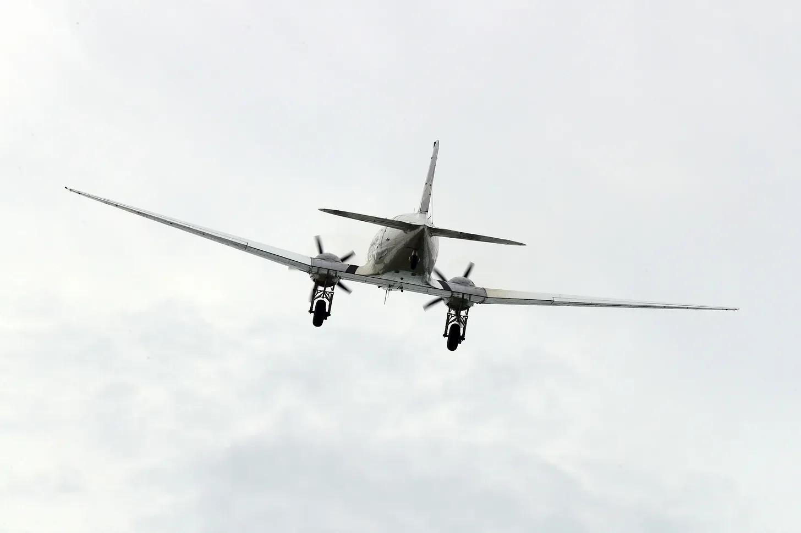

비행기가 흔들렸다. 격렬한 진동으로 커피 컵들이 바닥으로 떨어져 달그락거렸다. 제인은 손잡이를 꽉 잡았고, 손마디가 하얗게 변했다. 금속이 찢어지는 기이한 비명 소리가 기내를 가득 채웠다.
[The plane shuddered, a violent tremor that sent coffee cups clattering to the floor. Jane gripped her armrests, knuckles white, as an unearthly screech of tearing metal filled the cabin.]
창문 너머로 불가능한 초록색 빛이 번쩍였다.
[Through the window, a flash of impossible green.]
세상이 옆으로 기울어졌다. 산소 마스크가 떨어졌지만, 비행기가 두 동강 나면서 무용지물이 되었다. 몇 분 전까지만 해도 온전했던 동체에 생긴 거대한 구멍을 통해 바람이 울부짖었다.
[The world tilted sideways. Oxygen masks dropped, dangling uselessly as the aircraft split in two. Wind howled through the gaping wound where the fuselage had been whole moments before.]
제인의 좌석 열은 이제 맑고 조롱하는 듯한 푸른 하늘을 마주보고 있었다. 그녀는 그 광경을 순간적으로 볼 수 있었지만, 곧 좌석이 떨어져 나가면서 그녀는 자유낙하하기 시작했다.
[Jane’s row now faced open sky, blue and mocking in its serenity. She glimpsed it only for a heartbeat before her seat tore free, tumbling her into freefall]
그녀가 추락하는 동안, 거대한 형체가 그녀 옆으로 빠르게 지나갔다. 옥색 초록빛에 표면은 매끄럽고 이질적이었다. 거대한 동상의 일부인 듯한 거대한 눈이 그들이 함께 구름 사이로 떨어지는 동안 고대의 무관심으로 그녀를 응시했다.
[As she plummeted, a massive shape plunged past. Jade green, its surface smooth and alien. A colossal eye, part of some titanic statue, stared at her with ancient indifference as they fell together through wisps of cloud.]
땅이 그들 둘을 향해 빠르게 다가왔다.
[The ground rushed up to meet them both.]
제인의 세상은 하늘과 땅의 만화경이 되어 그녀가 떨어지는 동안 미친 듯이 회전했다. 그녀의 귀에 들리는 바람 소리는 동료 승객들의 비명 소리로 점철되었고, 그들의 목소리는 희박해지는 공기 속에서 가늘게 들렸다.
[Jane’s world became a kaleidoscope of sky and earth, spinning wildly as she fell. The roar of wind in her ears was punctuated by the screams of fellow passengers, their voices thin in the thinning air.]
파편들이 그녀 주위로 비처럼 쏟아졌다: 여행 가방, 좌석 쿠션, 비행기 동체의 파편들. 노트북이 그녀의 머리를 몇 인치 차이로 스쳐 지나갔다. 소용돌이 속에서 그녀는 그들 모두를 파멸로 몰아넣은 옥색 괴물의 모습을 어렴풋이 볼 수 있었다.
[Debris rained around her: suitcases, seat cushions, and fragments of the plane’s hull. A laptop whizzed past, missing her head by inches. Through the maelstrom, she caught glimpses of the jade monstrosity that had doomed them all.]
그것은 상상을 초월할 정도로 거대했고, 부서진 비행기의 가장 큰 조각들조차도 쉽게 압도했다. 그것이 회전하는 동안, 제인은 그것이 단순한 눈이 아니라 얼굴의 일부임을 알아챘다. 그들의 곤경을 조롱하는 듯한 평온하고 거의 미소 짓는 듯한 얼굴이었다.
[It was massive beyond comprehension, easily dwarfing the largest pieces of the shattered aircraft. As it tumbled, Jane saw that it wasn’t just an eye, but part of a face. A serene, almost smiling visage that seemed to mock their plight.]
갑자기, 충격이 왔다. 제인의 낙하가 갑자기 늦춰졌는데, 그녀의 셔츠가 비행기 날개의 일부인 날카로운 금속 조각에 걸렸기 때문이었다. 그녀는 그곳에 매달려 헐떡이며, 다른 이들이 계속해서 그녀 옆으로 추락하는 것을 무력하게 지켜보았다.
[Suddenly, a jolt. Jane’s fall abruptly slowed as her shirt caught on a jagged piece of metal, part of the plane’s wing. She dangled there, gasping, watching helplessly as others continued to plummet past her.]
이제 땅이 더 가까워졌다. 이 높이에서 보면 평화로워 보이는 초록색과 금색의 들판은 위에서 펼쳐지는 비극을 알지 못했다. 제인의 시선은 다시 한 번 옥색 얼굴에 고정되었다. 그녀의 상상일까, 아니면 그 표정이 바뀐 걸까?
[The ground was closer now. Fields of green and gold, peaceful from this height, ignorant of the tragedy unfolding above. Jane’s gaze locked onto the jade face once more. Was it her imagination, or had its expression changed?]
의식이 흐려지며 시야 가장자리가 어두워질 때, 제인은 그 동상이 윙크했다고 맹세할 수 있었다.
[As blackness crept into the edges of her vision, Jane could have sworn the statue winked.]
제인의 낙하는 옥수수 줄기 더미 속에서 끝났다. 식물들이 그녀의 추락을 간신히 막아주어 그녀를 살려냈다. 그녀가 숨을 헐떡이며 들이쉴 때 고통이 온몸을 관통했고, 혀에는 흙과 피 맛이 뒤섞였다. 그녀 주변의 옥수수밭은 뒤틀린 금속과 불타는 잔해의 무덤이 되어 있었다.
[Jane’s descent ended in a tangle of corn stalks, the plants breaking her fall just enough to keep her alive. Pain lanced through her body as she gasped for breath, the taste of soil and blood mingling on her tongue. Around her, the cornfield had become a graveyard of twisted metal and burning debris.]
어지러운 상태로 그녀는 몸을 일으켰고, 시야가 흐릿했다. 공기는 연기와 새어 나온 제트 연료의 달콤하면서도 역겨운 냄새로 가득했다. 멀리서 그녀는 희미한 울음소리와 불꽃이 타닥거리는 소리를 들을 수 있었다.
[Dazed, she pushed herself up, her vision swimming. The air was thick with smoke and the sickly-sweet scent of leaking jet fuel. In the distance, she could hear muffled cries and the crackle of flames.]
그때 그녀는 그것을 보았다.
[Then she saw it]
옥색 거인은 땅에 반쯤 묻혀 있었고, 그 거대한 눈은 하늘을 멍하니 바라보고 있었다. 하지만 제인이 지켜보는 동안, 그 눈이 움직이기 시작했고 부자연스러운 정확도로 그녀에게 초점을 맞추었다. 낮은 진동음이 공기를 가득 채우며 땅을 통해 그녀의 뼈까지 울렸다.
[The jade behemoth lay half-buried in the earth, its massive eye staring blankly at the sky. But as Jane watched, the eye began to move, focusing on her with unnatural precision. A low hum filled the air, vibrating through the ground and into her bones.]
갑자기, 초록색 에너지의 덩굴이 동상에서 뻗어 나와 잔해 사이를 휘감았다. 그것이 닿는 곳마다 금속이 휘어지고 유기물이 뒤틀렸다. 제인은 공포에 질린 채로 근처의 좌석이 아직 죽은 승객에게 묶인 채로 주변의 옥수수 줄기와 융합되기 시작하는 것을 지켜보았다.
[Suddenly, tendrils of green energy snaked out from the statue, weaving through the wreckage. Where they touched, metal warped and organic matter twisted. Jane watched in horror as a nearby seat, still strapped to a lifeless passenger, began to meld with the corn stalks around it.]
진동음이 더 커졌고, 제인은 이질적인 존재가 그녀의 정신 가장자리를 탐색하는 것을 느꼈다. 불가능한 건축물의 거대한 도시들, 빛과 그림자의 존재들, 은하계를 아우르는 전쟁의 이미지들이 그녀의 눈앞에 스쳐 지나갔다.
[The humming grew louder, and Jane felt an alien presence probing at the edges of her mind. Images flashed before her eyes - vast cities of impossible architecture, beings of light and shadow, a war that spanned galaxies.]
의식이 사라지면서 제인은 이것이 단순한 조각상이 아니라는 사실을 무섭고도 분명하게 깨달았다. 그것은 씨앗이었고, 그들은 방금 혼돈과 피로 그것에 물을 준 것이었다.
[As consciousness slipped away, Jane realized with terrifying clarity: this was no mere statue. It was a seed, and they had just watered it with chaos and blood.]
옥색 눈이 깜빡였고, 세상이 변하기 시작했다.
[The jade eye blinked, and the world began to change.]